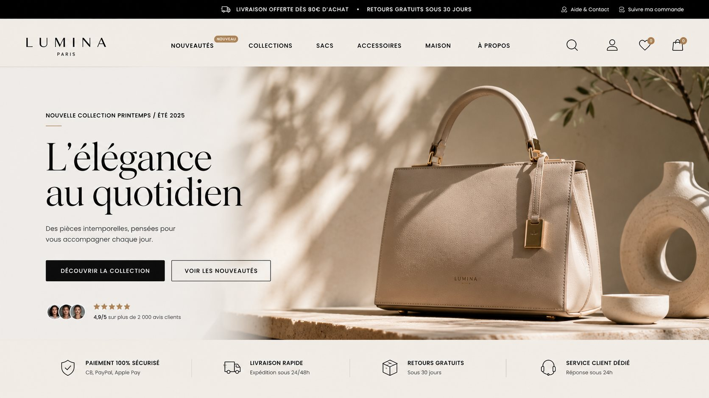
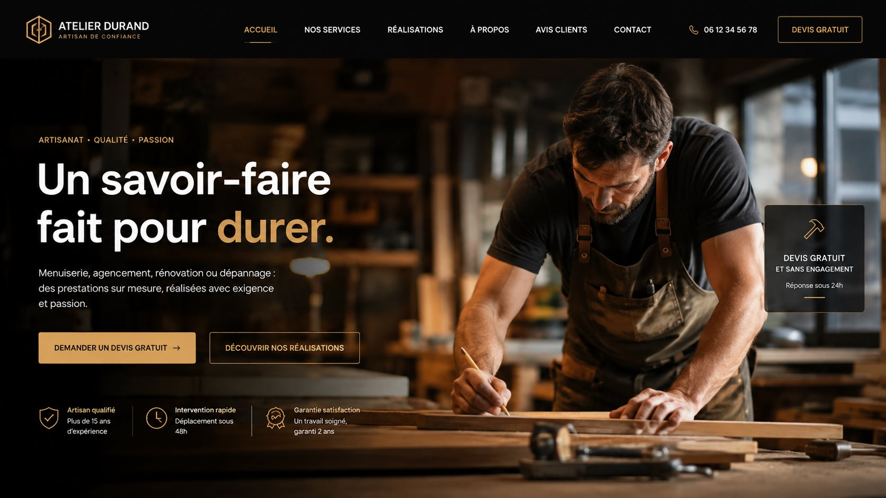
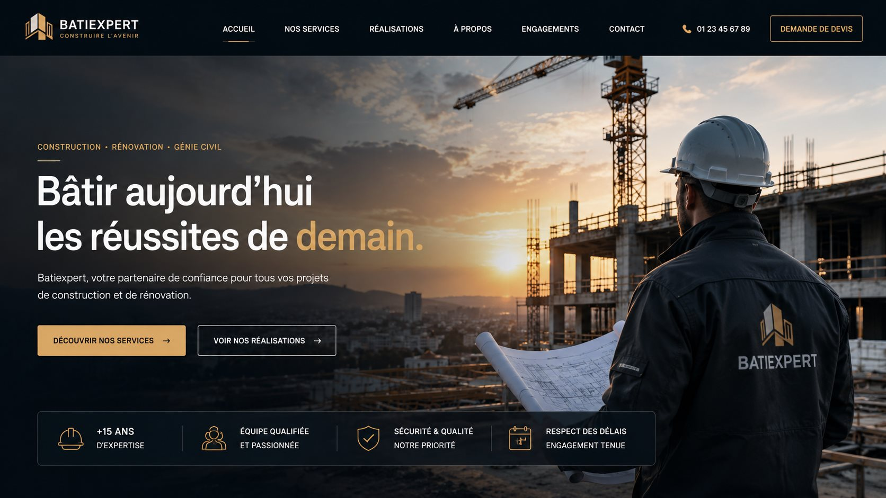
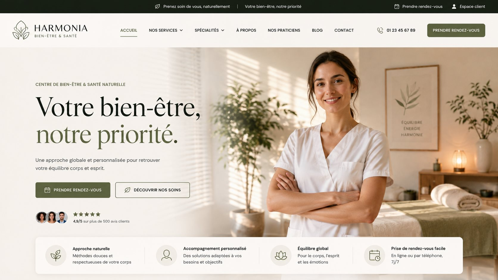

Voici à quoi ressemble un audit Growthline.
Un exemple concret pour comprendre ce que vous recevrez : un score par catégorie, et des problèmes classés par priorité.
La fiche Google Business est complète et à jour
Horaires, catégorie, photos et coordonnées sont cohérents avec le site — un signal de confiance apprécié par Google et les visiteurs.
Le CTA principal n'est pas suffisamment visible
Le bouton d'action se trouve sous la ligne de flottaison sur mobile, ce qui réduit fortement le taux de clics.
La page mobile manque de points de conversion
Un seul formulaire de contact est présent, sans numéro de téléphone cliquable ni prise de rendez-vous directe.
La présence locale pourrait être davantage exploitée
Les signaux de cohérence nom / adresse / téléphone sont incomplets sur les pages analysées.
À quoi pourrait ressembler votre nouveau site.
Survolez une case (ou touchez-la sur mobile) pour voir un style possible selon votre secteur — glissez pour voir les suivantes.






Illustrations de style, pas des sites réels existants ni des captures de clients.
Voici le type de diagnostic que Growthline produit.
Trois cas construits pour montrer notre méthode d'analyse — pas de vrais clients.
CASA NOVA
Restaurant méditerranéen premium — MarseilleCas fictifs construits pour illustrer notre méthode d'analyse — pas des clients réels ni de vraies données.